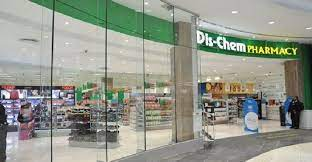

About Us
Dis-Chem was founded when recently qualified pharamacists, Ivan and Lynette Saltzman, opened their first retail pharmacy in Mondeor, south of Johannesburg, South Africa. The retail pharmacy introduced the concept of a discount pharmacy with product categories not previously offered in South African pharmacies.
The Saltzman’s second retail pharmacy followed at the Randridge Mall in Randburg, north of Johannesburg. Towards the end of the 1980s, Dis-Chem began expanding its offering of non-pharmaceutical products or its “front shop” offering, and opened a third retail pharmacy. The business continued to expand in the 1990s.
